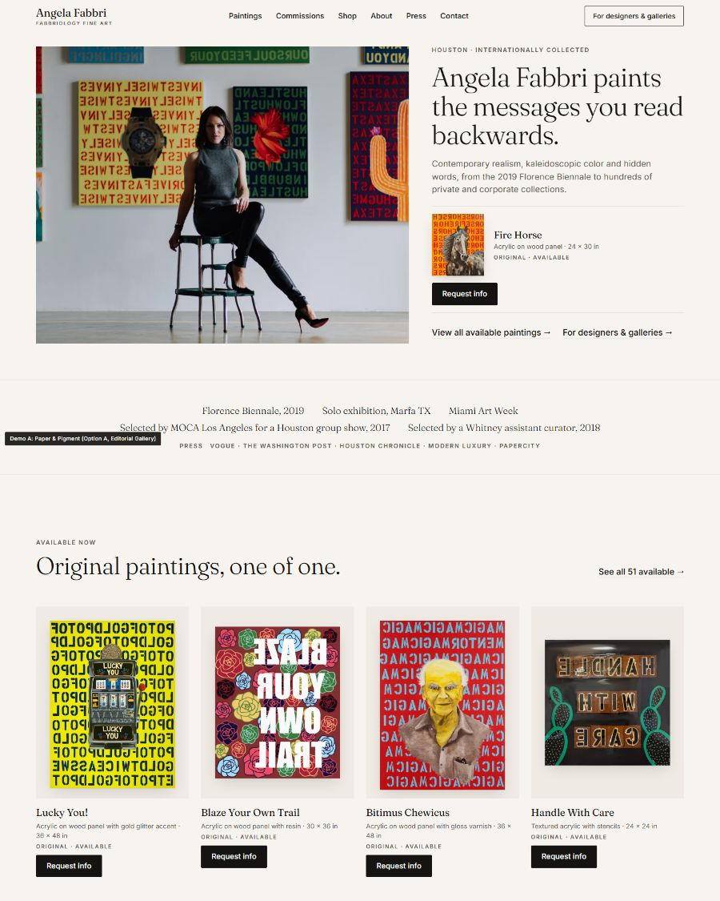
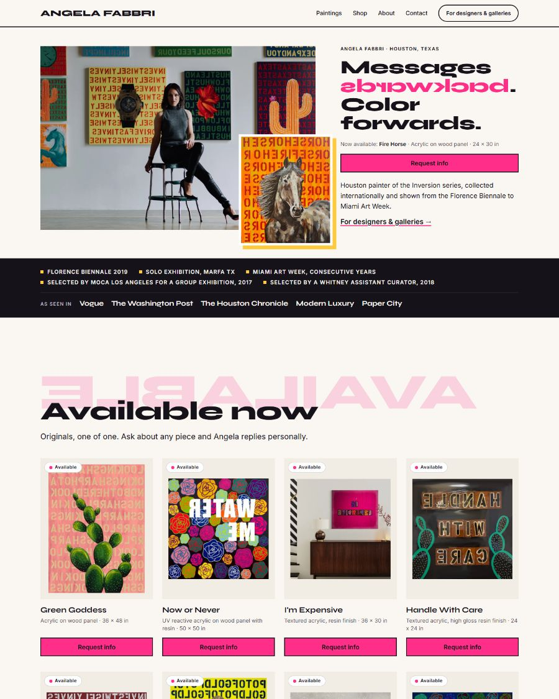
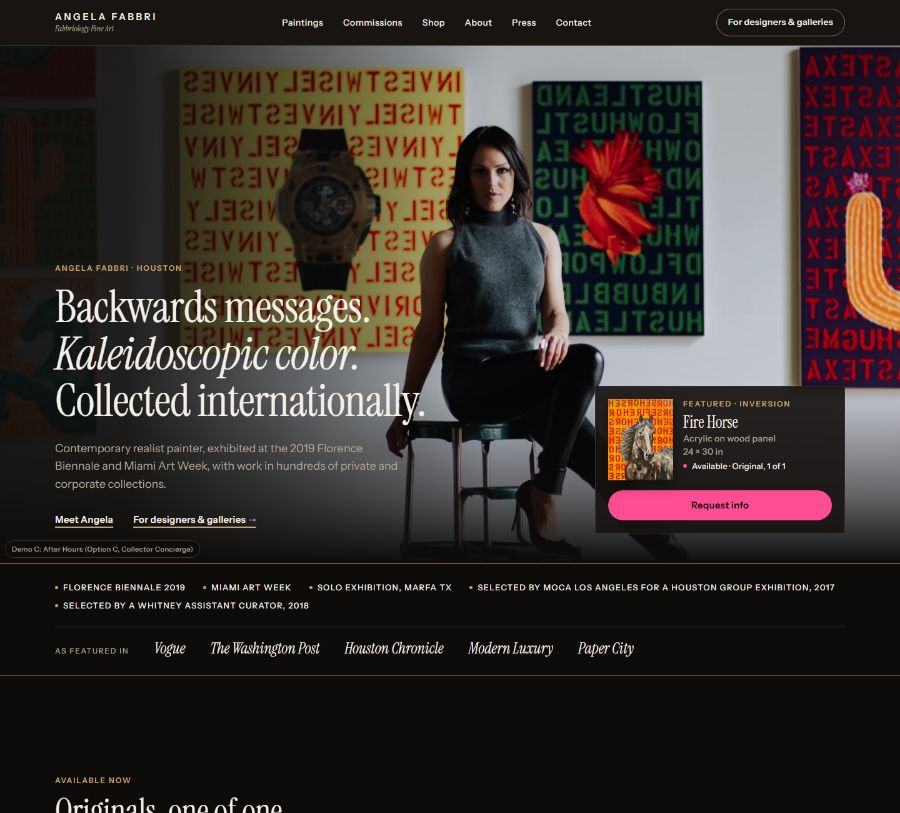

Angela Fabbri: redesign demo
Three directions for the new angelafabbri.com. Tap one, click Request info on any painting, and come back here to compare.

Paper & Pigment (Option A, Editorial Gallery)
The color is all hers. The page gets out of the way.
A warm-paper gallery wall: uncropped paintings with museum captions, a soft serif and quiet grotesk in ink. The hero pairs Angela's photo with Fire Horse and its inline Request info (2 clicks at 390px). Sold works show a Sold label and “Sold · Submit commission inquiry”, which opens the same dropdown in commission mode. “For designers & galleries” sits in the header and has its own homepage band.

Mirror Studio (Option B, Color-Forward Studio)
Messages backwards. Color forwards.
Angela's mirror-lettering and kaleidoscopic palette become the site's own design language: mirrored words as section markers, one bold color block per section and oversized Syne type. The art always sits framed on paper or white. The hero shows Angela with Fire Horse and a Request info button in the first mobile screen. Sold works use the same inline panel in commission mode (“Sold · Submit commission inquiry”).

After Hours (Option C, Collector Concierge)
Private viewing, after hours.
A gallery after closing: a warm near-black room where each painting hangs lit and gets a museum caption. Every work has an inline concierge next step: Request info if it is available, or “Sold · Submit commission inquiry” if it has sold. The “For designers & galleries” trade lane is one tap from every page.
Inquiries in the demo show a success message only; nothing is sent.